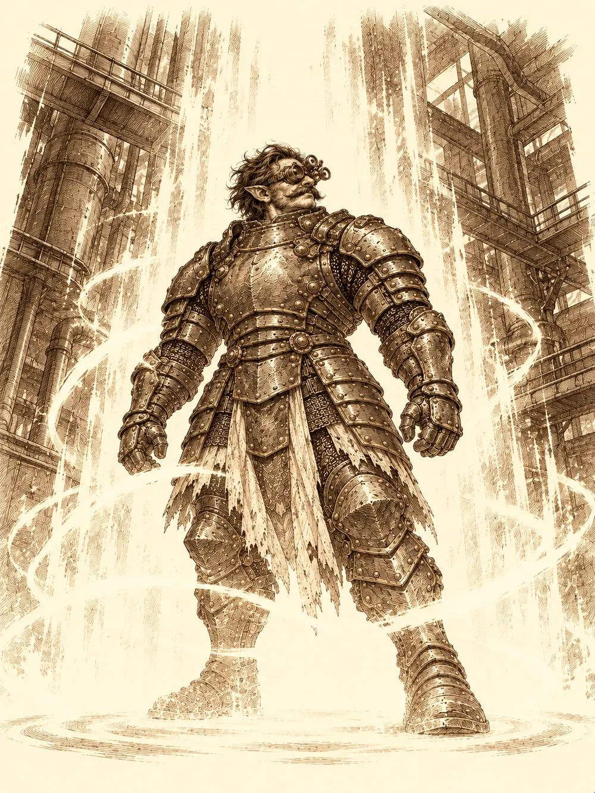

Capítulo 165
Viaje a Conosur
Libro X · Hasta pronto, Kuroto
Antes de partir, Archi se pasó un buen rato encerrado con R3. El autómata parpadeaba en azul mientras el gnomo le metía en la memoria planos, cálculos, apuntes, todo lo que sabía. Nadie le preguntó por qué. Estaba inquieto desde que habían decidido volver a Conosur, la ciudad de gnomos donde había nacido. El pequeño robot se quedó en casa.
El plan había sido de Gelbreak: ir a la fábrica de la familia de Archi, una casa llamada NOKIA, a buscar los planos de unas armaduras capaces de cambiar el curso de la guerra que se venía encima. Y mantener a Calista al margen, porque no iba a exponer a la shogun en un continente en guerra. Guxi y Serafina le habían dicho que se iba a enterar. Él había contestado que no, si nadie se lo contaba.
Cuando subieron al barco, Calista ya estaba en cubierta con los brazos cruzados.
Guxi no dijo nada. Serafina tampoco. Se limitaron a mirar a Gelbreak con una sonrisa que le duró todo el viaje.
Navegaron cerca de una semana. Por el camino fueron armando las tapaderas. Calista y Gelbreak serían una pareja de ancianos, encorvados y quejicas. Banzo se envolvería en una túnica que le tapara los tatuajes y no abriría la boca. Guxi sería un comerciante de mercancía humana, de los que venden personas como si fueran carne, y Serafina iría con él como su amuleto de la suerte. Kazuki, antes de desembarcar, se encerró en el camarote y salió convertido en fauno, con cuernos, una sonrisa lenta y una voz aterciopelada que no era la suya.
"Me gusta poner un toque personal en mis cosas".
La gruta donde atracaron estaba entre montañas, llena de puestos y de gente con cara de no querer preguntas, como los barrios bajos de Kuroto metidos en una cueva. Un gnomo con capucha, armadura de cuero y un par de dagas vino a saludar a Archi con los brazos abiertos. Le dio un abrazo y le robó la bolsa en el mismo movimiento. Archi se dio cuenta, el otro se la devolvió sin perder la sonrisa, y Archi se la puso otra vez en la mano.
"Quédatela. Pero necesito un favor. Un salvoconducto para entrar en la ciudad".
"Eso tiene un coste".
"Por eso he traído a alguien que quiere conocerte".
Le dio dos codazos y le señaló al fauno. El contacto se puso de puntillas, lo miró de arriba abajo y se le iluminaron los ojos.
"Me gusta, me gusta".
"Mirar sí. Tocar todavía no".
El contrabandista los guio por túneles húmedos hasta las afueras de Conosur, y al llegar se llevó a Kazuki detrás de unas rocas, como pago. Los demás acordaron intervenir si el noble pedía ayuda. Uno de ellos le hizo llegar un mensaje mágico: si la cosa se ponía fea, la palabra era patata. Kazuki contestó con una risa que no era la suya.
Archi notó enseguida que la ciudad había cambiado. Había más vagonetas que nunca corriendo por las vías, cargadas de mercancía, y por todas partes guardias enanos con casco, martillo y escudo, apostados como si custodiaran algo. Eso no había pasado jamás. Llegaron a un mercado enorme donde se vendía de todo: animales, piezas de maquinaria, núcleos arcanos que a Guxi le hicieron brillar los ojos. Calista arrastró a Gelbreak hacia una tienda de ropa. Archi vio adónde iban y se puso pálido. Conocía a la sastre. La había dejado plantada al marcharse.
Detrás de las rocas, Kazuki le había pedido ayuda al contacto, y el contacto le había dicho que no pensaba jugarse la vida por nadie. Así que Kazuki lo paralizó y lo golpeó, con cuidado de no matarlo, hasta dejarlo inconsciente. Más tarde unos guardias quisieron detenerlo por estar en una ciudad cerrada, y él desapareció de entre sus manos y reapareció lejos, otra vez con su cara de fauno.
La sastre se llamaba Uma. Recibió a la pareja de ancianos con ternura, y la anciana Calista, encantada con su papel, la fue llevando hacia el cotilleo. Los enanos habían cerrado Conosur por la guerra, le contó Uma. No entraba ni salía nada. Un decreto de un tal Hacha Oxidada la obligaba a coser para ellos. Y todo era culpa del asqueroso de Archi, el de la fábrica, que se había fugado dejándola plantada y debiéndole dinero.
"Ahora la fábrica la lleva su tío, Maximilian, con sus hijos. Teddy, Tony, Trevor y Turbius".
Gelbreak ponía los ojos en blanco bajo su disfraz de viejo. Archi acabó entrando en la tienda con Banzo, y cuando Uma lo vio le reclamó a gritos promesas y monedas. El gnomo la miró a los ojos, le habló bajito y le prometió que recuperaría la fábrica y la ciudad. La sastre se fue ablandando. Mientras tanto, Calista y Gelbreak le robaron dos anillos de la vitrina para meter al gnomo en un aprieto sentimental, pero no hubo boda. La deuda, la de las monedas y la otra, siguió donde estaba.
Al salir, Archi encontró al contrabandista tirado detrás de las rocas. Le arregló la ropa, le dejó una nota en el bolsillo, abrió su baúl mágico, lo metió dentro y cerró la tapa. El baúl desapareció.
Guxi y Serafina habían ido a la Espuma Húmeda, la taberna de Patrick Cerveza Fría, otro al que Archi debía dinero. Guxi entró con aires de gran señor y se presentó como coleccionista de rarezas. Patrick quiso ver la mercancía. Le abrió la boca a Serafina para contarle los dientes. Ella, que tenía ganas de hundirle la nariz, se tumbó de medio lado sobre la barra, cruzó las piernas y lo miró con una pereza que lo dejó boquiabierto. El tabernero sacó un papel y le hizo firmar a Guxi una promesa de negocios futuros. Entre trago y trago les contó que Archi le debía una fortuna y que la fábrica trabajaba ahora para los enanos.
Se dividieron para entrar en NOKIA. Archi y Banzo por la puerta principal; Turbius, el primo, discutió con él en la recepción y acabó dejándolo pasar. Calista y Gelbreak se escondieron dentro de una vagoneta. Guxi hizo invisibles a Serafina y a sí mismo cuando un guardia estuvo a punto de verle a ella las orejas. Kazuki se convirtió en un trabajador y entró saludando.
Archi se quedó parado en medio de la nave. El aire olía a aceite y a hierro caliente, y por todas partes había armaduras a medio montar, piezas, un aeroplano en construcción. Reconoció la caldera en la que se había caído de pequeño. Reconoció la gran puerta de los archivos familiares. Se le llenaron los ojos de lágrimas, y durante un momento se le olvidó el miedo.
Trevor, el primo que nunca se estaba quieto, corrió a abrazarlo y Archi le tapó la boca. El archivo estaba abierto, le dijo Trevor; Teddy dormía dentro. Tony estaba al fondo y Archi lo quitó de en medio con una tuerca bien lanzada que lo hizo tropezar contra otra máquina. Kazuki y Gelbreak se colaron con él en el archivo y allí, entre estanterías, encontraron un maletín con todos los planos de las armaduras.
Banzo, mientras tanto, se había distraído mirando la maquinaria. Un hilo de su túnica se enganchó entre dos engranajes y la túnica empezó a deshacerse. Las armas que llevaba a la espalda, el hacha y el mandoble que había sido de Gur, se soltaron y viajaron de máquina en máquina mientras el goliat corría detrás de ellas intentando atraparlas. Calista salió de la vagoneta para ayudarle.
Entonces se abrieron las puertas. Entró un gnomo con un bigote enorme, Maximilian, hablando de contratos con un grupo de enanos. Uno de ellos se quedó mirando hacia donde estaban los intrusos. Sonrió y llamó a Gelbreak por otro nombre.
"Iblit".
Banzo conocía esa palabra. La había oído una vez, estando solo, en unas montañas nevadas, peleando contra alguien, cuando otro llegó a salvarlo. Los enanos dejaron de serlo uno tras otro. Las ilusiones se les cayeron de encima como piel vieja, y debajo había drows. El que había hablado apartó a Maximilian de un empujón; el gnomo se quedó con la boca abierta, tan sorprendido como los demás. Aquel drow era hermano de Gelbreak, y ocupaba el puesto del general al que habían matado en la Infraoscuridad. Banzo lo recordaba de aquella pelea en la nieve.
Gelbreak intentó sacarlos de allí a todos con su magia, y una cadena de hechizos contrarios, lanzados por magos invisibles, le cortó el conjuro a medio pronunciar.
Serafina se lanzó a puñetazos. Banzo enganchó al hermano con el arpón y el drow cortó la red de un tajo. Luego le escupió un veneno que tumbó al goliat como un saco. Calista localizaba a los magos invisibles por el ruido de sus pies y gritaba dónde estaban, Kazuki volvía lentos a los enemigos, Guxi disparaba entre torretas. Archi agrandó uno de sus anillos hasta convertirlo en una argolla y atrapó a medias al hermano de Gelbreak. Después le puso el maletín en las manos al bardo.

"Reuníos todos. Hay que salir juntos".
Un golpe pequeño, casi un rasguño, despertó a Banzo. La maquinaria escupió delante de él un arma que no había visto nunca: un hacha de mano con dos cuchillas, nacida de las armas que se habían tragado los engranajes. La recogió y fue a cubrir la retirada. Calista levantó una niebla y curó a Gelbreak. Banzo empujó a Guxi hacia el grupo. Pero había otra nube, la de los enemigos, y tapaba a sus compañeros también a ojos del bardo, que no podía sacar de allí a quien no veía.
"¡Quita esto! ¡No os veo!".
Calista barrió la nube con una ráfaga de viento. Ahí estaban todos, juntos.
Archi tenía una pistola preparada. En el pecho de su armadura había empezado a correr un contador. Diez. Nueve. Ocho. Se volvió hacia Guxi y le sonrió.
"Es tu hora de brillar, brillantito".
"¿Qué haces? No. No lo hagas".
Archi apuntó a la frente de Gelbreak y disparó. En lugar de una bala salió un pergamino mágico que se le estampó entre las cejas, y bajo los pies de Calista, de Gelbreak, de Kazuki, de Banzo, de Guxi y de Serafina se encendió una luz blanca. Lo último que vieron fue la armadura del gnomo. Tres. Dos. Uno.
Aparecieron en la base de Kuroto. Archi no estaba con ellos.
Calista tardó un rato en abrir los ojos. Cuando los abrió, pateó una silla.
"Ese gnomo loco. Me debía unas armaduras".
Puso el maletín contra el pecho de Guxi.
"Haz esas armaduras. No voy a admitir que me retrases esto. Cada día que esperamos estamos más cerca de que Otakemaru haga su próximo movimiento".
"Antes quiero que te disculpes. Acaba de morir uno de nuestros compañeros y a ti solo te importan los números".
"¿Cuánta gente ha muerto ya en esta guerra, Guxi? Si la perdemos, toda la gente que conoces va a morir".
R3 tiró a Guxi de la manga. Le salió del ojo una luz azul, y en la luz estaba todo lo que Archi le había cargado antes de partir: los conocimientos para que otro terminara su trabajo.
Guxi colgó una nota en la base. Archi había muerto. Esa tarde lo despedirían en el cementerio de Sho.
Arwen entró corriendo a abrazarlo y él sonrió por primera vez en el día. Calista la acompañaba; Guxi no la miró. La niña anunció que volvía al bosque, y bastó una palabra de la shogun para que se le pusiera una seriedad impropia de su edad. Calista le explicó después a Guxi que Arwen estaba defendiendo sola Ukio contra un ejército de muertos, que iban a evacuar la aldea por el portal y que necesitaba las armaduras para los suyos. Guxi le apartó la mano del hombro. Le prometió que empezaría esa noche aunque no durmiera.
En el cementerio, Guxi había levantado un pequeño altar de piedra con el nombre de Archi. Serafina no se le separó. Sirth llegó sin decir nada y se quedó a un lado.
"Siempre pensé que debía proteger la sonrisa de cada uno para cuando acabara esta guerra", dijo Guxi, agachado ante la piedra. "Hoy me he dado cuenta de que no he sido capaz de proteger la tuya, maestro".
Prometió seguir su legado y cuidar de R3, y vertió un cazo de sake sobre la piedra. Serafina le reprochó al gnomo, entre lágrimas, todos los planes que ya no harían juntos. Sirth puso la mano sobre el altar y cerró los ojos un largo rato, buscando entre las almas. Al volver solo les habló de esperanza y del deber hacia Kuroto. No dijo qué había encontrado. Cuando los otros se fueron, se quedó solo ante la piedra y sonrió.
Cuatro días después, Guxi tenía las primeras armaduras. R3 proyectó en el aire un holograma de Archi sonriendo con los dos pulgares levantados, y Guxi lo celebró con la voz rota.
En la sala de guerra de palacio, el general Wel informaba de que el ejército de Otakemaru esperaba en sus campamentos del sur, y de que los demonios mayores estaban organizando a los menores en grupos. Eso solo ocurría cuando había un señor demoníaco al mando. La perla Ise añadió que los exploradores veían a los demonios mirar al cielo, y que la cúpula ya no los protegía. Luego, mirando a ver quién escuchaba, se corrigió en voz baja: la cúpula seguía allí, pero ahora cubría las tierras del otro lado de la Puerta Negra. Protegía al enemigo.
Calista se lo transmitió a Gelbreak con señas drow. Él recordó unas notas con puntos cardinales de las que habían hablado Banzo y otros cazadores; habría que preparar otra expedición. La shogun admitió que no sabía cómo hacerlo con tantas cosas a la vez. No había dormido. Gelbreak la convenció para que descansara, y se la llevó de allí con un destello.
Esa misma noche, una sombra subió por la fachada de palacio con un gancho y se coló por una ventana entreabierta. Era el cuarto de Shizuka; la niña se cayó de la cama, vio una figura agazapada entre las sillas, le dijo a Arwen que dejara de hacer ruido y siguió roncando. La sombra distrajo a los guardias tritones con campanas y alarmas que no existían, dejó aturdido al que no se movió de su puesto y entró en las habitaciones de la shogun. Detrás del baño había una puerta cubierta de runas. Mandó una copia de sí mismo contra ellas y las trampas saltaron a la vez y la deshicieron. Con unas herramientas de ladrón que le había dado Danifae abrió la puerta del tesoro, encontró un cofre encadenado y, dentro, dos esferas. Una desprendía un calor sofocante. La otra soltaba chispas. Las dejó donde estaban, volvió a cerrar las cadenas y se fue por la ventana.
En una taberna de los barrios bajos, Danifae bebía entre dos hombres que parecían dormir la borrachera, aunque de cerca se les veía un corte en el cuello. Kurobane se sentó frente a ella y le dibujó el camino hasta el cofre. A cambio, la drow le entregó el diario de una cultista. Le señaló las últimas páginas: otros se les habían adelantado en pactar con los Guardianes. Luego le aconsejó no saber más de lo conveniente y se marchó sola.
En un pico cerca de lo que había sido la Puerta Negra, Banzo había levantado un santuario de cinco piedras. Con los tatuajes encendidos, grabó en ellas los nombres de los cuatro guardianes. Quería que pagaran por haberlos abandonado.
"No hay vuelta atrás en este camino", le dijo la voz de su abuelo Tharok. "Para derrotarlos deberás convertirte en lo que juraste odiar. Un dios. Y tú no eres un dios, hijo".
Un chillido demoníaco le rompió la meditación. Cuando Jin llegó a ayudarlo, el goliat estaba rodeado de demonios que se deshacían en humo. Hablaron de lo organizados que venían ahora, de las bendiciones de los guardianes. Desde una roca, Danifae los miraba. Cuando Jin volvió al campamento, ella siguió a Banzo y le contó que había mandado al ninja a palacio. Le dijo que pronto podría irse, que ya sabía dónde estaban las esferas. Que desconfiara de Calista. Y sacó dos esferas de la bolsa, una que parecía contener un volcán y otra una tormenta. Banzo sintió su energía en la piel. No contestó. Siguió hasta la brecha, se sentó y volvió a meditar.
Al amanecer seguía allí, inmóvil, y el aire temblaba a su alrededor. En algún lugar de la ciudad, Kurobane sintió una presión en el pecho que no sabía de dónde venía, y una voz que le llegó clara como si la tuviera al lado.
"Estás avisado".
Mientras, Chilia despertaba empapada en sudor. Había soñado con un bosque oscuro, con árboles muertos que sangraban, con Arwen enredada entre las ramas, cubierta de necrosis. Una figura cadavérica de alas enormes le acariciaba la cara a la niña, bajaba la mano hasta su pecho y le arrancaba el corazón. Luego se volvía hacia ella y sonreía. Chilia se llevó la mano a la cara y la notó mojada. No entendía por qué. Todo el mundo acaba muriendo.
En Ukio, Channi llegó a la base arrastrando una bolsa más grande que ella, cargada de pociones, comida y semillas para reforestar el bosque. No quedaba nadie. Los refugiados del sur se habían ido; dos soldados del shogunato se llevaban a Kitaro hacia el portal mientras él protestaba que aquello era inaudito. Estaban evacuando el pueblo por orden de la shogun, le explicaron, hasta que Arwen purificara el bosque. Channi se quedó sola en el silencio, con las alas caídas. Luego levantó la vista al cielo y pidió ayuda a quien quisiera escucharla.